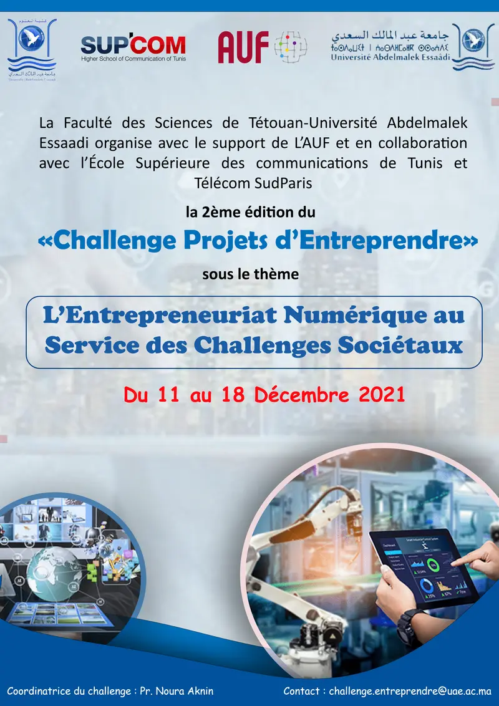

Dans le cadre d’un projet d’appui à l’entrepreneuriat numérique, Formation Entrepreneurial TUniso MAghrébine (FETUMA) supporté par l’Agence Universitaire de la Francophonie (AUF), la Faculté des Sciences de Tétouan de l’Université Abdelmalek Essaadi (UAE), l’École Supérieure des Communications de Tunis (SUP’COM) et Télécom SudParis lancent un appel à candidature auprès des étudiants de l’UAE, pour participer au concours entrepreneurial “Challenge Projets d’Entreprendre ©” sous le thème :
"L’Entrepreneuriat Numérique au Service des Challenges Sociétaux"
Ce challenge mettra en concurrence des équipes mixtes (profils technique et management), ayant pour défi de proposer une solution innovante à une problématique de la société et aboutissant à un projet de création d’Entreprise portant sur un service et/ou un produit avec une composante TIC.
Conditions et modalités de participation :
Le challenge se déroulera à la faculté des Sciences de Tétouan durant la semaine du samedi 11 au samedi 18 décembre 2021. Les équipes de 5 membres désirant participer pourront remplir le formulaire en suivant le lien : https://forms.gle/3XYp9W9uxsbs7BZp6
L’appel à candidature reste ouvert jusqu’au Mercredi 24 novembre à minuit.
Les équipes présélectionnées pour participer au concours seront contactées par email.
Des prix seront décernés aux 3 équipes lauréates :
Des attestations de participation seront remises à tous les participants qui bénéficieront en outre de divers mécanismes d’accompagnement comme des ateliers de formation, des pôles conseils et des sessions de coaching, etc.
Pour toute information complémentaire vous pouvez contacter le comité d’organisation à l’adresse mail : challenge.entrendre@uae.ac.ma
Pr. Noura AKNIN
Coordinatrice du Challenge
Pièces jointes: Fiche1.png